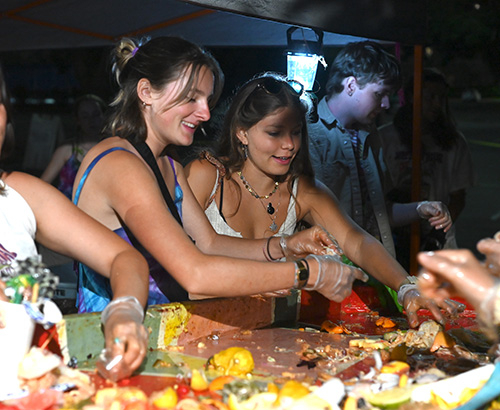

Reading the articles on game design were interesting but I felt like the biggest thing they were describing didn’t really speak to me. The article by Juego Studio had some good information. The first thing on their list was the importance of setting clear goals and objectives. I agree that this is fundamental to creating a good game.
Some of the following principles I wasn’t as enthusiastic about. Engaging core mechanics, maintaining game flow, and offering feedback as rewards; these feel like their purpose is to keep a player hooked, potentially addicted, rather than just creating a good game. So many people have someone in their lives addicted to video games. My brother has had phases where he stays up till 5 am every night gaming, yelling at his screen, angry when he is interrupted; I know so many people with similar stories. The way games engage their users to the point of addiction feels similar to UI/UX focused on convincing users to click “buy” or to keep scrolling. It feels unethical to me. As designers we have power, and game design that prioritizes keeping their user playing and UX design that keeps their user shopping or scrolling doesn’t feel right to me.
I think Wordle is an example of a great game. It is engaging but only for the few minutes a day that people spend on it. Also users are engaging with words, a brain exercise, oppressed to a violent, addictive video game. The whole purpose of UX is to empathize with your user, to prioritize their best interest and design accordingly, and I think Wordle is a great example of that.
This is an image of a sunset at the Green, the student housing facility. Looking west the sun is setting in the distance and the clouds are colored faintly pink and purple. The setting sun has cast darkness on the foreground. The trees are barren which illustrates that it is winter, so it must be cold especially with the sun down. There are some lights from the buildings and a few people milling around yet the image still has a feeling of emptiness.
I think this image could be stronger if it was a bit color corrected: brighter colors, increased contrast, and more brightness. I think there is a lot of “clutter” in the foreground. A good sunset picture has the sunset as the main thing and this has a lot of distracting elements so I think a similar, but more refined image might be better visually.
This image is interesting because there is a lot going on but it's not completely clear what all is happening. It appears to be dark but there is a lamp illuminating the space. Several people are partaking in a task that isn’t obvious, but they are all wearing gloves. What is actually happening is this is after the Whole Earth Festival and we are sorting the waste from that day's festival goers. This is what we like to call a C and R party. At a C and R party a person can expect lots of singing along to songs, as frantic hands sort industrial compost from normal compost from recyclables. It is messy and dirty, and weirdly satisfying.
This image depicts a crucial element of the Whole Earth Festival, sorting compost and recycling. This is relevant for my topic because I want to do an interactive site that provides information about different aspects of Wef. This tells a story that is important to me because I work for Wef and it has changed my life and I am so passionate about it and everything it stands for.
Interestly enough I actually just did this exercise in my Human Centered Design class last week. We analyzed an image my professor took at an airport, in it a woman with a large backpack and a baby strapped to her fount is waiting in line to board her flight. We spent 20 minutes, taking turns making statements and assumptions based on the image. I honestly found the activity to be unenjoyable. I felt bad for the women we placed all our judgments on, calling her “tired” and “worn down”. But one thing is for sure, a picture says a thousand words. We could have kept going and going, breaking down the image to its individual pixels. Asking the question “what is going on here” opens a flood gate of descriptions and inferences.
I found Henri Heymans, and his website an interesting display of image usage. The way he uses just enough imagery to be visually interesting but not enough to be obvious and predictable is intriguing. When you hover over the titles of his work small images pop up in the corner previewing the project. It doesn't give much away, but enough to spark the viewers' curiosity and inspire them to click the link and see more. I think this is a great method for showcasing a portfolio, because the usual method of a gallery, mosaic wall of project pictures is predictable. Having it disappear and reappear on hover makes you want to engage with the site.
I chose to read the Best Practices for Modals/Overlays/Dialog Windows by Naema Baskanderi because the content felt slightly more up to date, which is important since the web is always changing and progressing so quickly. I found lots of important information such as the anatomy of a modal window, each piece is important to a successful user experience.
Convenient escape is important because often the first reaction is to get out of a pop up, I know that’s what I do. Having a close button in the top corner, an escape key press and a click outside of the pop up window to close are all good ways to give a user multiple outs. A title is important to communicate the purpose of the window. The buttons that submit, confirm, or say yes must have clear separation from the cancel button, done with color or space. Communicating importance for the pop up window can be done by putting a shadow on the background and the size of the window. Another interaction that makes users hate pop ups less is having the window be user initiated, so having a user click something that triggers the window to appear. These small details all contribute to a better experience for the user.
Have you ever been using a website and it feels like you have been filling out input fields forever and you keep going back to fix something and right when you think you're done, a few more questions pop up. Most likely. You may not remember when exactly that happened, but I guarantee you can relate. It feels like it can just be expected when you're filling out check out information or doing an application. The process can be tedious and annoying and even result in abandonment.
The best UX/UX is invisible. It is so seamless you don't even realize you are iterating with it. Normally there is no “wow, this site is so easy to interact with and clear to navigate”; but rather “wow, this site sucks because it's confusing and I don’t know how to use it”. Good UI/UX is a result of empathy for your user. If you are considering their needs, desires, and their best interest in the design decisions you make, your websites will smooth sailing for your users.
It is easy to go wrong with forms. There are lots of different options for how to design them. There's drop downs, check boxes, default values, error messages. Lots of consideration is needed for figuring out what will work best for your content.
I have been filling out an application on the UCEAP website, with so many forms. The quantity has made it tedious but the usability has improved the experience. They use a wide array of input options and have icons to assist with navigation. A long form is difficult for users so finding any way to make it easier will leave them more satisfied.